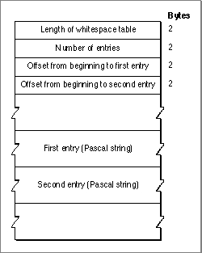

Legacy Document
Important: The information in this document is obsolete and should not be used for new development.
Important: The information in this document is obsolete and should not be used for new development.


The Whitespace Table
The whitespace table contains characters that may be used to indicate white space, such as blanks, tabs, and carriage returns. Figure B-13 shows the format of the whitespace table. Each entry pointed to by the table is a Pascal string specifying a single whitespace character (which may be 1 or 2 bytes long). The strings immediately follow the
offset fields.Figure B-13 Format of the whitespace table
